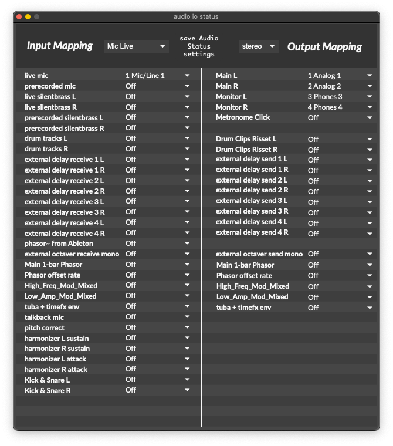

Audio IO Status¶
To start, only three channels need to be set up: The Live Mic input, and the Monitor L & R outputs.
Assign the Live Mic input to the audio interface input that your tuba’s mic is connected to.
Assign the Monitor L & R outputs to your audio interface’s headphone outputs.
{kind=link}
Input Mapping¶
The input menu sets the main input to SousaFX. “live mic” and “live silentbrass” come from the audio interface’s physical inputs, and “prerecorded mic”, “prerecorded silentbrass” come from ableton.
- live mic: tuba mic input
- prerecorded mic: prerecorded tuba mic from ableton
- live silentbrass L: silentbrass input
- live silentbrass R: silentbrass input
- prerecorded silentbrass L: prerecorded silentbrass from ableton
- prerecorded silentbrass R: prerecorded silentbrass from ableton
- drum tracks L: drum bus from ableton
- drum tracks R: drum bus from ableton
- external delay receive 1 L: 4 stereo channels of delay receives.
- external delay receive 1 R
- external delay receive 2 L
- external delay receive 2 R
- external delay receive 3 L
- external delay receive 3 R
- external delay receive 4 L
- external delay receive 4 R
- phasor~ from Ableton: sync signal
- talkback_mic
- tuba_env: this and the following are sent to SousaVFX if it’s running on a different computer.
- main_phasor
- phasor_with_phase_offset
- high_freq_mod_mixed
- low_amp_mod_mixed
- delays_n_reverb
Output Mapping¶
The output menu sets whether the main outputs are mono or stereo.
- Main L: Front Of House output
- Main R: Front Of House output
- Monitor L: monitor mix
- Monitor R: monitor mix
- Metronome Click: external metronome
- Drum Clips Risset L: to ableton drum bus
- Drum Clips Risset R: to ableton drum bus
- external delay send 1 L: 4 stereo channels of delay sends.
- external delay send 1 R
- external delay send 2 L
- external delay send 2 R
- external delay send 3 L
- external delay send 3 R
- external delay send 4 L
- external delay send 4 R
- tuba_env: this and the following are received by SousaVFX if it’s running on a different computer.
- main_phasor
- phasor_with_phase_offset
- high_freq_mod_mixed
- low_amp_mod_mixed
- delays_n_reverb